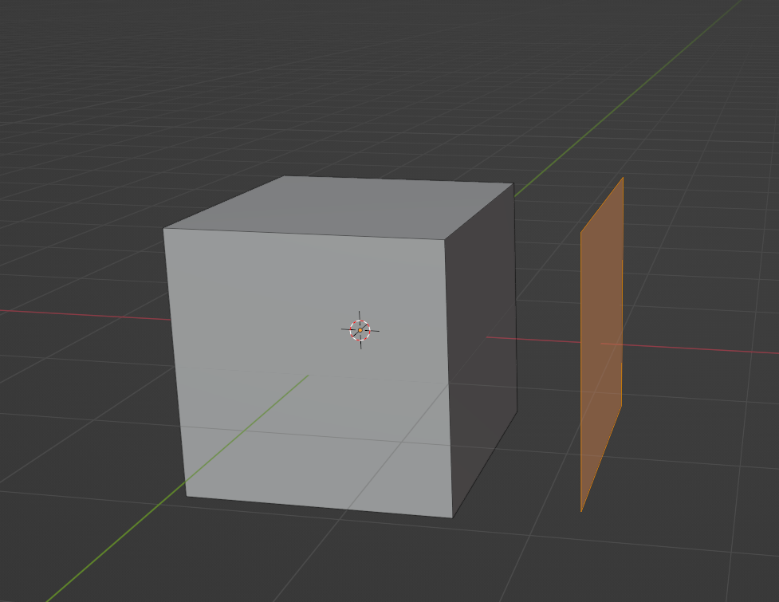
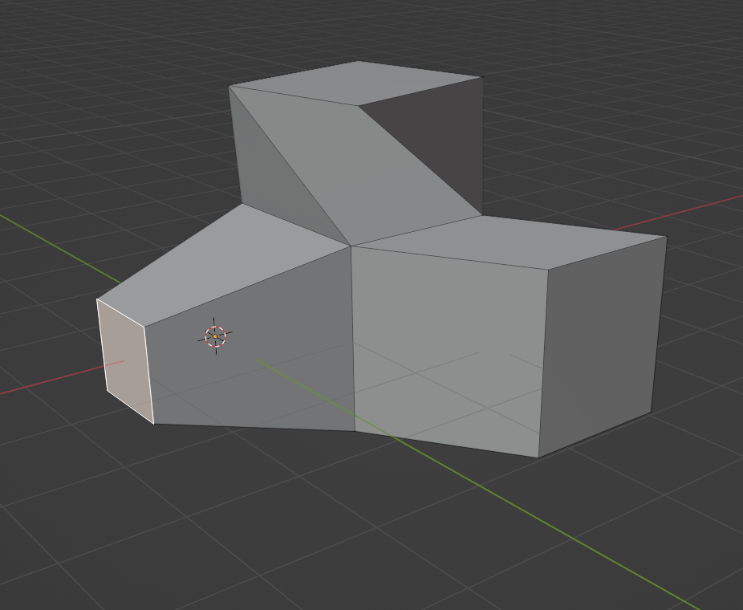
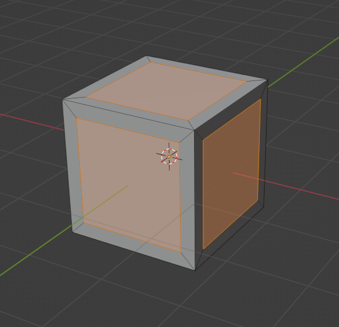

Beveling (Keybind ctrl + B) is the process of adding a modfier that adds extra edges to an edge you select to smooth it. It is an excellent tool for hardsurface modeling and is versatile in its implementation
Beveling (Keybind ctrl + B) is the process of adding a modfier that adds extra edges to an edge you select to smooth it. It is an excellent tool for hardsurface modeling and is versatile in its implementation

Loop cuts are a very important tool for creating edges around your models in blender. Alternatively you could do the slower method of the knife tool. This method is not perfect as depending upon the geometry of your model the loop cut may not loop all the way around, however do to the indicator you can easily use connect the missing bridge of the link later. The key bind for this is CTRL+R.

Sometimes when your working on a model you want to change the shader from solid to something else for a few reasons. One of the many being to check if your model has any lighting issues where the faces don't take in light properly. Another reason is to check your wireframe all the way through to make sure you have no extra geometry on the inside. The Keybind is Z

Duplicating is a great way to create exact copies of objects you'll mulitple of. In edit mode you can select individual faces to duplicate which is useful for creating clothes equipment that is form fitting to your model. The keybind for this is Shift D

While there is a tool that allows you to click and drag you can use the keybinds instead to instantly complete the action. If you press any of the keybinds alongside as a corresponding Axis (x,y,z) you can make any of these actions follow those Axis's. G to move, S to scale, R to rotate, E to extrude.

This is a keybind and function I discovered recently which has helped me alot. It is amazing for creating bumpy geomtric texture or indentations or holes. This tool makes an indent on the facew much like an extrusion on the face of the object, this can be done individualy. The keybind for this is I.